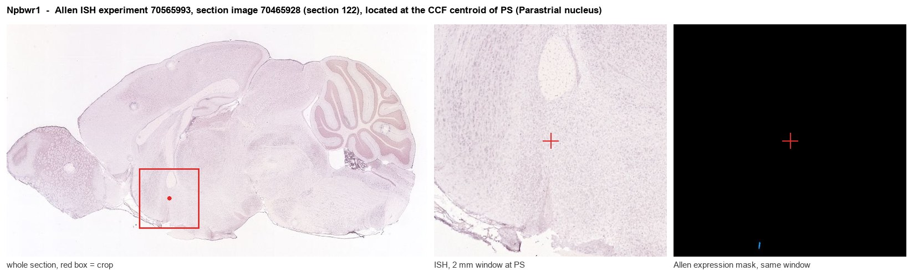
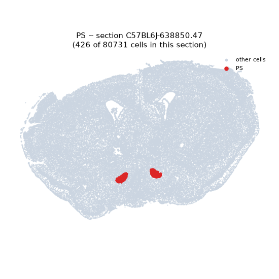
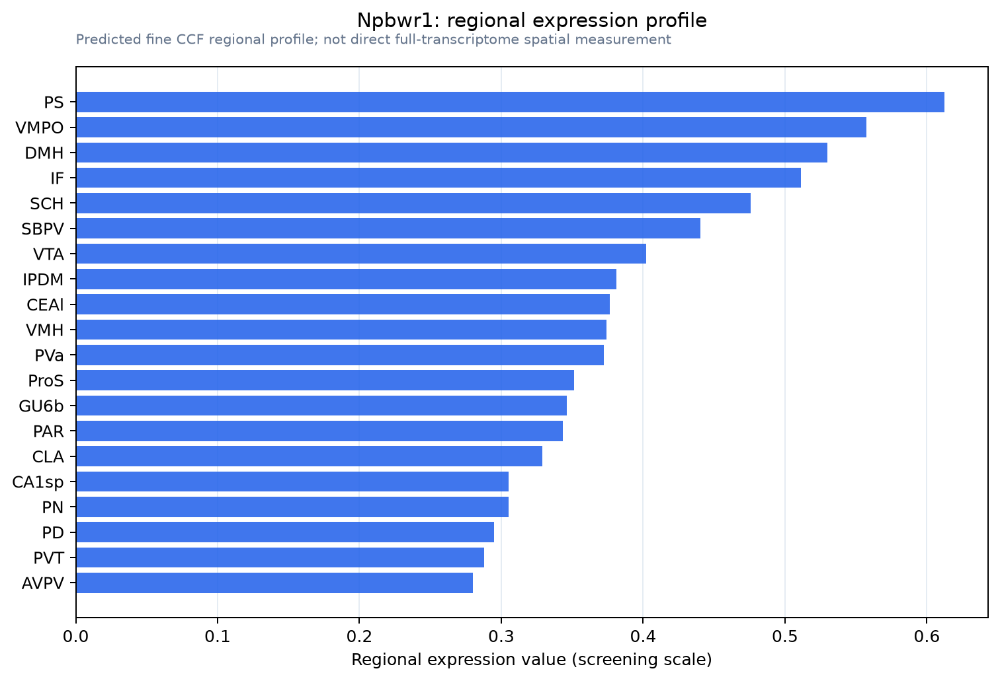

Npbwr1
Neuropeptides B/W receptor type 1 (G protein-coupled receptor 7)
Spatial tier: REGION_BIASED · Class: GPCR · Top region: PS (Parastrial nucleus) · Positive regions: 44/554
44.6Discovery Score
37.4Targetability Score
CEvidence grade C
What this means: Npbwr1: fine CCF profile is region-biased toward PS (top regions: PS, VMPO, DMH, IF, SCH); this is a discovery lead, not direct proof.
Function in PS: evidence, prediction, innovation
- Gene function
- NPBWR1 (GPR7) is a Gi/o-coupled G protein-coupled receptor activated by the neuropeptides B and W. Activation inhibits adenylyl cyclase and reduces excitability of target neurons; the system is implicated in feeding, neuroendocrine regulation, sleep, stress and social/emotional behaviour.
- Region function
- The parastrial nucleus is a small preoptic hypothalamic nucleus adjacent to the anteroventral periventricular and medial preoptic nuclei, implicated in neuroendocrine control of reproduction and in preoptic autonomic/thermoregulatory output.
- Published in this region
- inferred No region-specific literature found. The closest evidence is elsewhere in preoptic/hypothalamic territory: Uchio 2009 showed rhythmic GPR7 expression in suprachiasmatic neurons and altered circadian behaviour in GPR7-null mice, and Nagata-Kuroiwa 2011 found Npbwr1 knockout mice have abnormal social behaviour and enhanced fear memory with altered HPA output.
- Predicted function
- Prediction: in the parastrial nucleus NPBWR1 would provide Gi-mediated inhibition of preoptic neuroendocrine neurons, letting neuropeptide B/W signals from arcuate and brainstem sources restrain reproductive or autonomic output and contribute to stress-induced suppression of these functions. Local NPB infusion should silence parastrial neurons and blunt LH pulses or thermoregulatory responses, while Npbwr1 knockout or Gq-DREADD activation of these cells is predicted to release that inhibition, producing exaggerated neuroendocrine and stress-hormone responses to novelty.
- Innovation
- ★★★★★ 5/5 The parastrial nucleus is almost never studied on its own and no NPBWR1 work has addressed it, although knockout mice and peptide agonists already exist.
- Tools
- Npbwr1 knockout mice; neuropeptide B and neuropeptide W peptides as agonists; anti-NPBWR1 antibodies; preoptic targeting with Esr1-Cre/Gal-Cre plus AAV.
- References
Direct evidence located at the region

Allen ISH experiment 70565993, section image 70465928 (section 122): the section that contains the CCF centroid of Parastrial nucleus according to the Allen image-to-atlas alignment (reference_to_image), with a 2 mm window around that point. Left: whole section, red box = window. Middle: ISH signal. Right: Allen's expression-mask view of the same window. open this image in the Allen viewer
Look it up yourself: Allen Mouse Brain ISH for Npbwr1Allen reference atlas: PS (structure 1109)ABC Atlas MERFISH viewer(in the ABC Atlas choose dataset MERFISH-C57BL6J-638850-CCF, colour cells by gene "Npbwr1" or by parcellation_substructure "PS")All genes confined to PS + 3-D brain
Direct spatial evidence
MERFISH REGION LOCATOR

Regional expression figure

Predicted WMB × fine-CCF profile; not direct full-transcriptome spatial measurement.
Spatial profile
Evidence and specificity
- Evidence status
- PREDICTED_FINE
- Direct sources
- None; predicted localization only
- Exclusive threshold
- 12 positive regions out of 554
- Spatial specificity
- 0.310
- Top-region fraction
- 0.041
- Filter status
- PASS
Interpretation limits
- Cell-type-to-region projection is imputed expression, not direct spatial measurement.
- Adult reference atlases do not establish stability across age, sex, strain, state, or disease.
- Transcript abundance does not guarantee protein abundance or genetic-tool performance.